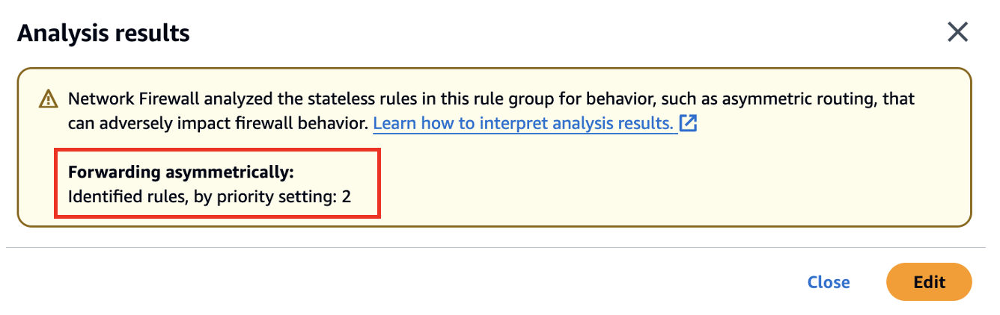

AWS Network Firewall
Introduction
Welcome to the AWS Network Firewall Best Practices Guide. The purpose of this guide is to provide prescriptive guidance for AWS Network Firewall for efficiently protecting your VPCs and their workloads. Publishing this guidance via GitHub will allow for quick iterations to enable timely recommendations that include service enhancements, as well as the feedback of the user community. This guide is designed to provide value whether you are deploying Network Firewall for the first time in a single account, or looking for ways to optimize Network Firewall in an existing multi-account and/or multi-VPC deployment.
How to use this guide
This guide is geared towards security practitioners who are responsible for monitoring and remediation of security events, malicious activity and vulnerabilities within AWS accounts (and resources). The best practices are organized into different categories for easier consumption. Each category includes a set of corresponding best practices that begin with a brief overview, followed by detailed steps for implementing the guidance. The topics do not need to be read in a particular order.
- Getting Started
- Deployment Considerations
- Implementation
- Operationalizing
- Ensure Symmetric Routing
- Use Strict rule ordering and 'Drop established' or 'Application drop established' with corresponding 'Alert' default actions
- Use Stateful rules over Stateless rules
- Use Custom Suricata rules instead of UI generated rules
- Use as few Custom Rule Groups as possible
- Ensure the $HOME_NET variable is set correctly
- Use Alert rule before Pass rule to log allowed traffic
- Use “flow:to_server” keyword in stateful rules
- How to make sure your new Stateful firewall rules apply to existing flows
- Set up logging and monitoring
- Options for Mitigating client side TLS SNI manipulation with AWS Network Firewall
- Cost Considerations
- Troubleshooting stateless rules for asymmetric forwarding
- Resources
What is AWS Network Firewall?
AWS Network Firewall is a managed service that makes it easy to deploy essential L3-L7 deep packet inspection protections for all of your Amazon Virtual Private Clouds (VPCs). It can filter traffic at the subnet level of your VPC, including filtering traffic going to and coming from an internet gateway, NAT gateway, over VPN, or AWS Direct Connect.
What are the benefits of enabling AWS Network Firewall?
AWS Network Firewall has a highly flexible rule engine so you can build custom firewall rules to protect your unique workloads. It supports thousands of rules, and the rules can be based on port, protocol, and FQDN/domain. AWS Network Firewall supports rules written in Suricata format, giving you the ability to create customized rules based on specific network traffic characteristics, such as packet size or byte match pattern. Network Firewall also offers AWS Managed domain lists and threat signatures so you don’t have to worry about writing and maintaining your own Suricata IPS rules.
Getting started
In this section we will cover what you need to consider before activating AWS Network Firewall in your AWS infrastructure.
Deployment Considerations
When customers first start deploying AWS Network Firewall, they might be tempted to start configuring it right away without looking at all its capabilities, for example deploying endpoints to each VPC, only using managed rules or not using Alert rules. We recommend looking into the Network Firewall documentation as this could be a significant time-saver later down the road.
To get started you should understand the three main architecture patterns for Network Firewall deployments and what would be best suite your environment.
- Distributed deployment model — Network Firewall is deployed into each individual VPC.
- Centralized deployment model — Network Firewall is deployed into a centralized VPC attached to an instance of AWS Transit Gateway for East-West (VPC-to-VPC) or North-South (inbound and outbound from internet, on-premises) traffic. We refer to this VPC as the inspection VPC.
- Combined deployment model — Network Firewall is deployed into a centralized inspection VPC for East-West (VPC-to-VPC) and a subset of North-South (on-premises, egress) traffic. Internet ingress is distributed to VPCs that require dedicated inbound access from the internet, and Network Firewall is deployed accordingly.
See the Deployment models for AWS Network Firewall blog post for further details about deployment models.
Implementation
In this section we will cover the minimum requirements for deploying AWS Network Firewall.
To deploy Network Firewall, you just need one VPC, one subnet, but for resiliency we highly recommend a firewall endpoint/subnet be deployed for each AZ that you have workloads in.

Figure 1: Network Firewall VPC Configuration settings
If you want to encrypt the Network Firewall configuration data at rest with your own key, you will need to specify a KMS key.
Figure 2: Network Firewall CMK Configuration
For more information on deployment refer to the getting started with Network Firewall documentation
If you're implementing AWS Network Firewall into a production environment where you want the least amount of traffic disruption, we recommend you set the Stream exception policy option to "Continue" or "Reject" and that you not have any default block actions. The Stream exception policy option of "Drop" can be more disruptive to production traffic since it silently blocks mid stream flows and does not send a TCP Reset.
Operationalizing
Ensure Symmetric Routing
Network Firewall does not support Asymmetric routing so you will need to ensure symmetric routing is configured in your VPC. When you deploy Network Firewall into a VPC, you need to modify the route tables to ensure traffic is sent through firewall endpoints so that it can be inspected. Network Firewall does not support asymmetric routing so the route tables have to account for network flows going to the firewall endpoint in both directions.
When using AWS Transit Gateway (TGW) in a centralized deployment configuration and using Network Firewall to inspect East-West traffic between VPCs, the TGW’s appliance mode option needs to be enabled for the attachments in the Inspection VPC. The appliance mode can be enabled in the AWS Console, as well as the API.
If appliance mode is not enabled, the return path traffic could land on an endpoint in a different AZ, which will prevent the Network Firewall from correctly evaluating the traffic against the firewall policy.
Use Strict rule ordering and 'Drop established' or 'Application drop established' with corresponding 'Alert' default actions
- In Network Firewall there are two options for how the Suricata engine is going to process rules.
- The "Strict" option is recommended because it instructs Suricata to process the rules in the order you have defined.
- The "Action Order" option supports Suricata's default rule processing which is appropriate for IDS use cases but is not a good fit for typical firewall use cases.
- When selecting Strict rule ordering you are also able to select "Default" actions that are run at the end of your rules and will be applied to any traffic not matching earlier rules. There are two main approaches:
Why 'Drop established' over 'Drop all'
"Drop established" is recommended over "Drop all" because it allows the Suricata engine to perform layer 7 inspection before making a drop decision. This is critical for pass rules that match on domain information in TLS SNI and HTTP host header fields — with "Drop all", traffic would be dropped before Suricata has a chance to inspect these application layer attributes.
Drop established
"Drop established" is the simpler option and a good starting point for most deployments. It drops any established connection traffic that doesn't match an earlier rule, while still allowing the layer 7 inspection needed for domain-based filtering. Be sure to also select the corresponding "Alert established" action — without it, traffic dropped by the default action will not be logged. "Alert established" can also be selected on its own without a drop action, which is useful for seeing what traffic would be dropped before enforcing the rule.

Figure 3a: Network Firewall Drop Established default actions
Application drop established
"Application drop established" is designed for environments where TLS Client Hello messages may be fragmented across multiple packets, which is increasingly common with post-quantum hybrid cipher key exchanges. Instead of dropping traffic immediately after the TCP handshake, it waits until it has seen enough of the application layer data (such as the TLS SNI field) before making a drop decision.

Figure 3b: Network Firewall Application Drop Established default actions
If you use "Application drop established", be aware that it can drop TCP flow control packets (such as window updates, keep-alives, and resets) that occur after the TCP handshake but before a pass rule applies. You may need custom rules to allow these packets. See the Evaluation order for stateful rule groups documentation for details.
Alternatively, the Egress Default Block Rules in the custom Suricata rules template included in this guide apply the same application-layer-aware drop strategy using custom rules, without requiring separate rules for TCP flow control packets.
Use Stateful rules over Stateless rules
- Stateless rules should be used very sparingly because they can easily cause asymmetric flow forwarding issues (where only one side of the flow is seen by the stateful inspection engine of the firewall) and they tend to make the overall firewall ruleset more complex to understand and troubleshoot. For the large majority of use cases we recommend the stateless engine’s default action be set to “Forward to stateful rule groups” and we recommend not having any stateless rules configured since they take precedence over stateful rules.
- If you are going to use stateless rules, it’s important to understand how to use the Network Firewall’s Stateless Rule Group Analyzer to troubleshoot and resolve asymmetric flow issues. See the “Troubleshooting stateless rules for asymmetric forwarding”
- Customers should leverage Stateful rules if they want to get the deep packet inspection IPS capabilities of the Network Firewall. Some customers accidentally start with stateless rules only to find out later that they really needed to use stateful rules instead.
- Stateless rules could be used in the case where you don't want some traffic to be logged or alerted on and simply denied, but for the most part your rule groups should look like this (below) in the AWS Console:
Figure 4: Network Firewall Stateless Rule Groups
- Pros of using Stateful rules
- Return traffic is automatically allowed so there is no need to define both ingress & egress rules for the same flow of traffic
- Deep packet inspection is supported, which gives you a deeper visibility into layer 7 attributes of the traffic
- Supports logging so customers can review the full application level details of traffic, as well as the standard 5-tuple flow information
- These rules are easier to troubleshoot, and they are much more flexible and capable than the stateless rules
- Customers can add a description to the rules, such as its creation date (with change request number), use case or other comments
- The Reject action is supported
- The capacity calculation for these rules is easier to work with
Use Custom Suricata rules instead of UI generated rules
These are configurable under the Stateful rule group options and are a free-form text that you to have full control. They allow you to more easily leverage the full flexibility of Suricata. Here are example Suricata rules that customers have found helpful when getting started.
Figure 5: Network Firewall Stateful Rule Group
We recommend you educate yourself and your team on using custom Suricata rules early in their adoption because often later they will need the power and flexibility of custom Suricata rules to support all their use cases.
The pros of using customer Suricata rules:
- Maximum flexibility
- Control over the alerting and how it shows up in the logs
- Custom rule signature ID can be used which helps troubleshooting and simplifying log analysis
- Free-form text rules are easier to copy, edit, share, and backup.
- Easy to switch rule(s) from one rule group to another (blue-green testing for example)
- Allow for adding the very important keyword: “flow:to_server” to rules easily
To assist customers in writing their custom Suricata rules, we created the Suricata Rule Generator for AWS Network Firewall Open Source application
Below we have also included a custom template for an egress security use case to show examples of custom suricata rules.
# This is a "Strict rule ordering" egress security template meant only for the egress use case. These rules would need to be adjusted to accommodate any other use cases. Use this ruleset with "Strict" rule ordering firewall policy and no default block action, as this template includes custom default block rules at the end that block everything not explicently allowed.
# This template will not work well with the "Drop All" or "Drop Established" default firewall policy actions.
# Make sure the $HOME_NET variable is set correctly (do this at the firewall policy level so all Rule Groups inherit it)
# Silently allow TCP 3-way handshake to be setup by $HOME_NET clients so that the domain filtering rules will work properly
# Do not move this section, it's important that this be at the top of the entire firewall ruleset to reduce rule conflicts
pass tcp $HOME_NET any -> any any (flow:not_established, to_server; sid:202501021;)
pass tcp any any -> $HOME_NET any (flow:not_established, to_client; sid:202501022;)
# Silently turn on JA3/S hash logging for all other tls alert rules (like sid:999991)
alert tls $HOME_NET any -> any any (ja3.hash; content:!"xxxxxxxxxxxxxxxxxxxxxxxxxxxxxxxx"; noalert; flow:to_server; sid:202501024;)
alert tls any any -> $HOME_NET any (ja3s.hash; content:!"xxxxxxxxxxxxxxxxxxxxxxxxxxxxxxxx"; noalert; flow:to_client; sid:202501025;)
# Direct to IP connections
reject http $HOME_NET any -> any any (http.host; content:"."; pcre:"/^(?:[0-9]{1,3}\.){3}[0-9]{1,3}$/"; msg:"HTTP direct to IP via http host header (common malware download technique)"; flow:to_server; sid:202501026;)
reject tls $HOME_NET any -> any any (tls.sni; content:"."; pcre:"/^(?:[0-9]{1,3}\.){3}[0-9]{1,3}$/"; msg:"TLS direct to IP via TLS SNI (common malware download technique)"; flow:to_server; sid:202501027;)
# JA4 No SNI Reject
reject tls $HOME_NET any -> any any (ja4.hash; content:"_"; startswith; content:!"d"; offset:3; depth:1; msg:"JA4 No SNI Reject"; sid:1297713;)
# Block higher risk Geoip
drop ip $HOME_NET any -> any any (msg:"Egress traffic to RU IP"; geoip:dst,RU; metadata:geo RU; flow:to_server; sid:202501028;)
drop ip $HOME_NET any -> any any (msg:"Egress traffic to CN IP"; geoip:dst,CN; metadata:geo CN; flow:to_server; sid:202501029;)
# Block higher risk domain categories
reject tls $HOME_NET any -> any any (msg:"Category:Command and Control"; aws_domain_category:Command and Control; ja4.hash; content:"_"; flow:to_server; sid:202602061;)
reject tls $HOME_NET any -> any any (msg:"Category:Hacking"; aws_domain_category:Hacking; ja4.hash; content:"_"; flow:to_server; sid:202602062;)
reject tls $HOME_NET any -> any any (msg:"Category:Malicious"; aws_domain_category:Malicious; ja4.hash; content:"_"; flow:to_server; sid:202602063;)
reject tls $HOME_NET any -> any any (msg:"Category:Malware"; aws_domain_category:Malware; ja4.hash; content:"_"; flow:to_server; sid:202602064;)
reject tls $HOME_NET any -> any any (msg:"Category:Phishing"; aws_domain_category:Phishing; ja4.hash; content:"_"; flow:to_server; sid:202602065;)
reject tls $HOME_NET any -> any any (msg:"Category:Proxy Avoidance"; aws_domain_category:Proxy Avoidance; ja4.hash; content:"_"; flow:to_server; sid:202602066;)
reject tls $HOME_NET any -> any any (msg:"Category:Spam"; aws_domain_category:Spam; ja4.hash; content:"_"; flow:to_server; sid:202602067;)
reject http $HOME_NET any -> any any (msg:"Category:Command and Control"; aws_url_category:Command and Control; flow:to_server; sid:202602068;)
reject http $HOME_NET any -> any any (msg:"Category:Hacking"; aws_url_category:Hacking; flow:to_server; sid:202602069;)
reject http $HOME_NET any -> any any (msg:"Category:Malicious"; aws_url_category:Malicious; flow:to_server; sid:2026020610;)
reject http $HOME_NET any -> any any (msg:"Category:Malware"; aws_url_category:Malware; flow:to_server; sid:2026020611;)
reject http $HOME_NET any -> any any (msg:"Category:Phishing"; aws_url_category:Phishing; flow:to_server; sid:2026020612;)
reject http $HOME_NET any -> any any (msg:"Category:Proxy Avoidance"; aws_url_category:Proxy Avoidance; flow:to_server; sid:2026020613;)
reject http $HOME_NET any -> any any (msg:"Category:Spam"; aws_url_category:Spam; flow:to_server; sid:2026020614;)
# Block higher risk ccTLDs
reject tls $HOME_NET any -> any any (tls.sni; content:".ru"; nocase; endswith; msg:"Egress traffic to RU ccTLD"; flow:to_server; sid:202501036;)
reject http $HOME_NET any -> any any (http.host; content:".ru"; endswith; msg:"Egress traffic to RU ccTLD"; flow:to_server; sid:202501037;)
reject tls $HOME_NET any -> any any (tls.sni; content:".cn"; nocase; endswith; msg:"Egress traffic to CN ccTLD"; flow:to_server; sid:202501038;)
reject http $HOME_NET any -> any any (http.host; content:".cn"; endswith; msg:"Egress traffic to CN ccTLD"; flow:to_server; sid:202501039;)
# Block high risk TLDs
reject tls $HOME_NET any -> any any (tls.sni; content:".xyz"; nocase; endswith; msg:"High risk TLD .xyz blocked"; flow:to_server; sid:202501040;)
reject http $HOME_NET any -> any any (http.host; content:".xyz"; endswith; msg:"High risk TLD .xyz blocked"; flow:to_server; sid:202501041;)
reject tls $HOME_NET any -> any any (tls.sni; content:".info"; nocase; endswith; msg:"High risk TLD .info blocked"; flow:to_server; sid:202501042;)
reject http $HOME_NET any -> any any (http.host; content:".info"; endswith; msg:"High risk TLD .info blocked"; flow:to_server; sid:202501043;)
reject tls $HOME_NET any -> any any (tls.sni; content:".top"; nocase; endswith; msg:"High risk TLD .top blocked"; flow:to_server; sid:202501044;)
reject http $HOME_NET any -> any any (http.host; content:".top"; endswith; msg:"High risk TLD .top blocked"; flow:to_server; sid:202501045;)
# Block QUICK traffic
drop quic $HOME_NET any -> any any (msg:"QUIC traffic blocked"; flow:to_server; sid:3898932;)
# Log higher risk ports
alert ip $HOME_NET any -> any 53 (msg:"Possible GuardDuty/DNS Firewall bypass!"; flow:to_server; sid:202501055;)
alert ip $HOME_NET any -> any 1389 (msg:"Possible Log4j callback!"; flow:to_server; sid:202501059;)
alert ip $HOME_NET any -> any [4444,666,3389] (msg:"Egress traffic to high risk port!"; flow:to_server; sid:202501058;)
# Port/protocol enforcement (TLS can only use TCP/443, TLS can't use anything other than TCP/443, etc.)
reject tcp $HOME_NET any -> any 443 (msg:"Egress Port TCP/443 but not TLS"; app-layer-protocol:!tls; flow:to_server; sid:202501030;)
reject tls $HOME_NET any -> any !443 (msg:"Egress TLS but not port TCP/443"; flow:to_server; sid:202501031;)
reject tcp $HOME_NET any -> any 80 (msg:"Egress Port TCP/80 but not HTTP"; app-layer-protocol:!http; flow:to_server; sid:202501032;)
reject http $HOME_NET any -> any !80 (msg:"Egress HTTP but not port TCP/80"; flow:to_server; sid:202501033;)
reject tcp $HOME_NET any -> any 22 (msg:"Egress Port TCP/22 but not SSH"; app-layer-protocol:!ssh; flow:to_server; sid:202501060;)
reject ssh $HOME_NET any -> any !22 (msg:"Egress SSH but not port TCP/22"; flow:to_server; sid:202501061;)
# Silently (do not log) allow low risk protocols out to anywhere
pass ntp $HOME_NET any -> any 123 (flow:to_server; sid:202501034;)
pass icmp $HOME_NET any -> any any (flow:to_server; sid:202501035;)
# Alert on requests to possible suspicious TLDs
alert tls $HOME_NET any -> any any (tls.sni; pcre:"/^(?!.*\.(com|org|net|io|edu|aws)$).*/i"; msg:"Request to possible suspicious TLDs"; flow:to_server; sid:202501065;)
alert http $HOME_NET any -> any any (http.host; pcre:"/^(?!.*\.(com|org|net|io|edu|aws)$).*/i"; msg:"Request to possible suspicious TLDs"; flow:to_server; sid:202501066;)
# Silently (do not log) allow AWS public service endpoints that we have not setup VPC endpoints for yet
# VPC endpoints are highly encouraged. They reduce NFW data processing costs and allow for additional security features like VPC endpoint policies.
pass tls $HOME_NET any -> any any (tls.sni; content:"ec2messages."; startswith; nocase; content:".amazonaws.com"; endswith; nocase; flow:to_server; sid:202501047;)
pass tls $HOME_NET any -> any any (tls.sni; content:"ssm."; startswith; nocase; content:".amazonaws.com"; endswith; nocase; flow:to_server; sid:202501048;)
pass tls $HOME_NET any -> any any (tls.sni; content:"ssmmessages."; startswith; nocase; content:".amazonaws.com"; endswith; nocase; flow:to_server; sid:202501049;)
# Allow-list of strict FQDNs to silently allow
pass tls $HOME_NET any -> any any (tls.sni; content:"checkip.amazonaws.com"; startswith; nocase; endswith; flow:to_server; sid:202501050;)
pass http $HOME_NET any -> any any (http.host; content:"checkip.amazonaws.com"; startswith; endswith; flow:to_server; sid:202501051;)
# Allow-List of strict FQDNs, but still alert on them
# This method shows the verdict of "pass"
alert tls $HOME_NET any -> any any (tls.sni; content:"www.example.com"; startswith; nocase; endswith; msg:"TLS SNI Allowed"; flow:to_server; sid:202501052;)
pass tls $HOME_NET any -> any any (tls.sni; content:"www.example.com"; startswith; nocase; endswith; flow:to_server; sid:202501053;)
# Allow HTTPS domain and also log it
# This method shows the verdict of "alert" instead of pass
pass tls $HOME_NET any -> any any (alert; msg:"www.example2.com allowed"; tls.sni; content:"www.example2.com"; startswith; nocase; endswith; flow:to_server; sid:202506131;)
# Allow-List of second level/registered domain and all of its subdomains
# When using 'dotprefix': Always place it before 'content' and always include the leading dot in the domain name (.amazon.com in the following example)
pass tls $HOME_NET any -> any any (tls.sni; dotprefix; content:".amazon.com"; nocase; endswith; flow:to_server; sid:202501078;)
#
# Custom Block Rules
# These replace "Drop All" or "Drop Established" or "Application drop established" default actions
#
# Egress Default Block Rules
reject tls $HOME_NET any -> any any (msg:"Default Egress HTTPS Reject"; ssl_state:client_hello; ja4.hash; content:"_"; flowbits:set,blocked; flow:to_server; sid:999991;)
alert tls $HOME_NET any -> any any (msg:"X25519Kyber768"; flowbits:isnotset,blocked; flowbits:set,X25519Kyber768; noalert; flow:to_server; sid:999993;)
reject http $HOME_NET any -> any any (msg:"Default Egress HTTP Reject"; flowbits:set,blocked; flow:to_server; sid:999992;)
reject tcp $HOME_NET any -> any any (msg:"Default Egress TCP Reject"; flowbits:isnotset,blocked; flowbits:isnotset,X25519Kyber768; flow:to_server; sid:999994;)
drop udp $HOME_NET any -> any any (msg:"Default Egress UDP Drop"; flow:to_server; sid:999995;)
drop icmp $HOME_NET any -> any any (msg:"Default Egress ICMP Drop"; flow:to_server; sid:999996;)
drop ip $HOME_NET any -> any any (msg:"Default Egress All Other IP Drop"; ip_proto:!TCP; ip_proto:!UDP; ip_proto:!ICMP; flow:to_server; sid:999997;)
# Ingress Default Block Rules in case ingress traffic lands on this firewall
# You may want to silence these rules by putting "noalert" on them to save on logging costs
drop tls any any -> $HOME_NET any (msg:"Default Ingress HTTPS Drop"; ssl_state:client_hello; ja4.hash; content:"_"; flowbits:set,blocked; flow:to_server; sid:999999;)
alert tls any any -> $HOME_NET any (msg:"X25519Kyber768"; flowbits:isnotset,blocked; flowbits:set,X25519Kyber768; noalert; flow:to_server; sid:9999910;)
drop http any any -> $HOME_NET any (msg:"Default Ingress HTTP Drop"; flowbits:set,blocked; flow:to_server; sid:9999911;)
drop tcp any any -> $HOME_NET any (msg:"Default Ingress TCP Drop"; flowbits:isnotset,blocked; flowbits:isnotset,X25519Kyber768; flow:to_server; sid:9999912;)
drop udp any any -> $HOME_NET any (msg:"Default Ingress UDP Drop"; flow:to_server; sid:9999913;)
drop icmp any any -> $HOME_NET any (msg:"Default Ingress ICMP Drop"; flow:to_server; sid:9999914;)
drop ip any any -> $HOME_NET any (msg:"Default Ingress All Other IP Drop"; ip_proto:!TCP; ip_proto:!UDP; ip_proto:!ICMP; flow:to_server; sid:9999915;)
# The following rules alert you if they see traffic not to or from $HOME_NET (meaning $HOME_NET probably isn't set correctly)
alert ip $HOME_NET any -> any any (noalert; flowbits:set,egress_from_home_net; flow:to_server; sid:8925324;)
alert ip any any -> $HOME_NET any (noalert; flowbits:set,ingress_to_home_net; flow:to_server; sid:8923323;)
alert ip any any -> any any (msg:"$HOME_NET may not be set right! Set it at the firewall policy level."; flowbits:isnotset,ingress_to_home_net; flowbits:isnotset,egress_from_home_net; threshold: type limit, track by_both, seconds 600, count 1; flow:to_server; sid:8923283;)
Use as few Custom Rule Groups as possible
The reasons for this we have listed below:
- When a custom rule group is created, its capacity needs to be defined and extra headroom needs to be taken into account because capacity cannot be modified after a rule group has been created. Having many rule groups creates additional headaches for managing rule capacity limits. For capacity it is recommended to set your custom rule group capcity to whatever leftover capacity you have after implementing your AWS managed rule groups.
- With several rule groups to manage, understanding how traffic is going to be handled becomes more complex since every rule group needs to be inspected to analyze how it impacts the traffic. Seeing your rules in one view makes it easier to identify if a rule conflicts or overshadows other rules instead of jumping between multiple rule groups to stitch together an understanding of how traffic will be evaluated by the policy.
- Network Firewall supports a maximum combined total of 20 rule groups (Managed and Custom). If you create many custom rule groups you will limit how many AWS Managed Rule Groups can also be added.
- For troubleshooting purposes, you will want to make sure Signature IDs (SIDs) are unique across all rule groups. Within a single rule group Network Firewall will enforce unique SIDs, but not across all rule groups. If you don’t have unique SIDs across all rule groups then it can be more challenging to understand from the logs which rule actually handled the traffic.
Ensure the $HOME_NET variable is set correctly
By default the $HOME_NET variable is set to the CIDR range of the VPC where Network Firewall is deployed.
Figure 6: Network Firewall HOME_NET Variable
However this default behavior might not cover the CIDR ranges of the VPCs you want to protect, like Spoke VPC A and Spoke VPC B in the above example.
You want to make sure that the $HOME_NET CIDR range lines up with all your VPCs that you intend to protect and match traffic against. Most customers benefit from setting $HOME_NET to all RFC 1918 IP address ranges (10.0.0.0/8, 172.16.0.0/12, and 192.168.0.0/16).
This variable can be set at a global firewall policy level or in each rule group. If it’s set at both levels, the rule group setting wins.
The $HOME_NET variable and it’s inverse ($EXTERNAL_NET) are used for matching traffic in AWS managed rules. $EXTERNAL_NET follows $HOME_NET and is always anything outside of $HOME_NET.
When using the managed rules for an east/west use case you will want to decide which VPCs/CIDRs you want to protect and assign only those CIDRs to the $HOME_NET variable. If you assign all VPCs/CIDRs then none of those CIDR ranges will be matched by the $EXTERNAL_NET variable in the managed rules. You can also copy out the rules from the threat signatures and adjust the variables to your liking (even replacing the variables by “any“) if you want them to match any/all CIDRs. The downside of doing this is those rules will be static at that point in time and will not be automatically updated like the AWS managed rules.
Here is an example custom Suricata rule that can help you identify if you have traffic going through the firewall that is not included in $HOME_NET and perhaps should be:
alert tcp !$HOME_NET any -> !$HOME_NET any (flow:to_server,established; msg:"It looks like you might have $HOME_NET traffic that is not a part of the $HOME_NET variable. Please make sure your $HOME_NET variable is set correctly."; sid:39179777;)
Use Alert rule before Pass rule to log allowed traffic
If you have a mandate to log all traffic (denied or allowed), you need to add an alert rule for the same traffic as the pass rule before the pass rule itself in your rule group because Pass rules in Suricata simply allow the traffic and do not log it.
#Log allowed traffic to https://*.amazonaws.com
alert tls $HOME_NET any -> any any (tls.sni; content:".amazonaws.com"; nocase; endswith; msg:"*.amazonaws.com allowed by sid:021420242"; flow:to_server; sid:021420241;)
pass tls $HOME_NET any-> any any (tls.sni; content:".amazonaws.com"; nocase; endswith; msg:"Pass rules don't alert, alert is on sid:021420241"; flow.to_server; sid:021420242;)
You need to use Strict Ordering and the Alert rule needs a higher priority than the Pass rule as demonstrated in the code sample above.
The SID in the alert rule message can refer the SID of the pass rule and vice-versa. It can be helpful to use longer SIDs so that you can quickly search your logs for that SID without the query showing unrealted information that might also contain that identifier.
Alternatively, you can add alert; keyword to pass rules, but they will produce a verdict in the alert log of alert instead of a verdict of pass. Example rule:
# This method shows the verdict of "alert" instead of pass
pass tls $HOME_NET any -> any any (alert; msg:"www.example2.com allowed"; tls.sni; content:"www.example2.com"; startswith; nocase; endswith; flow:to_server; sid:202506131;)
Use “flow:to_server” keyword in stateful rules
With Suricata, it’s possible to configure conflicting rule sets. When traffic to a destination operates at different layers of the OSI model, traffic we want to allow that is operating at a higher level(for example TLS) might get blocked by a rule that is operating at a lower level. For example TCP:
Example of bad ruleset (Strict rule ordering) – DO NOT USE
# Rule 1 is intended to block http traffic to [baddomain.com](http://baddomain.com/)
reject http $HOME_NET any → any 80 (http.host; content:"baddomain.com"; sid:1;)
# Rule 2 allows the TCP port 80 traffic flow before application protocol inspection
pass tcp $HOME_NET any → any 80 (sid:2;)
Using “flow:to_server” in the rules will make them operate at the same level so the traffic can be evaluated at the same time, and the pass rule (sid:2) doesn’t allow the traffic in a way that takes precedence over the reject rule (sid:1)
Example of good ruleset (Strict rule ordering) – Ok to use
# Rule 1 will block http traffic to [baddomain.com](http://baddomain.com/)
reject http $HOME_NET any → any 80 (http.host; content:"baddomain.com"; sid:1;)
# Rule 2 will NOT take precedence over rule 1
pass tcp $HOME_NET any → any 80 (flow:to_server; sid:2;)
See Troubleshooting rules in Network Firewall for more information on troubleshooting firewall rules
How to make sure your new Stateful firewall rules apply to existing flows
Network Firewall leverages the Suricata deep packet inspection engine for all Stateful firewall rules. After a flow has been allowed by a Suricata rule, Suricata places that flow in the state table so that it knows it no longer needs to spend resources running deep packet inspection on that flow. For as long as that flow remains active, any new Stateful firewall rules will not apply to that traffic since a decision was already made on that flow. Sometimes you may want your newly added Stateful firewall rules to apply to all traffic, including already active traffic that has been previously allowed through the firewall. For example, perhaps you began setting up the network firewall and started with an, "allow all traffic" type of rule, but then as you get further along in the deployment and testing of network firewall you may want to narrow down your ruleset, and ensure that even already allowed traffic must be processed by your new rules.
How to clear the Network Firewall stateful rules state table
- Go into the "Details" page of your firewall policy
- Edit the "Stream exception policy" to something other than what it is currently set to, and click Save
- Then edit the "Stream exception policy" and set it back to what you had it set to before. In the majority of cases we recommend: "Stream exception policy: Reject"
Now any and all traffic, even if it is traffic that was previously allowed, will be re-evaluated against the latest stateful firewall rules.
Set up logging and monitoring
Network Firewall supports two log types, Alert logs and Flow logs
Alert logs * Information from Suricata * IPS engine * Layer 7 attributes (like domains) * Protocol detection
Flow logs * 5=tuple information that flows across the firewall * Include the volume of traffic * Helps identify the top producers and consumers of data
The native firewall monitoring dashboard provides multiple options for viewing key metrics about your firewall. You can view all the metrics available as part of the dashboard here.
Use CloudWatch Logs Insights to analyze Network Firewall logs for security and operational insights. This query analyzes both flow logs (for traffic volume data) and alert logs (for TLS SNI information) by correlating them using flow_id:
fields @timestamp, event.flow_id, event.netflow.bytes, event.tls.sni
| stats sum(event.netflow.bytes) as flowBytes, latest(event.tls.sni) as sni by event.flow_id
| stats sum(flowBytes) as totalBytes, count(*) as flowCount by sni
| sort totalBytes desc
| limit 20
The query uses two-stage aggregation to correlate SNI with byte counts. First, it aggregates by flow_id to combine bytes from flow logs with SNI from alert logs. Then it sums all bytes by domain to show which external services your environment communicates with most and where the bulk of your traffic is going.

Cost considerations
Because each Network Firewall endpoint has hourly charges even if it’s not used, reduce the number of endpoints by leveraging a centralized inspection design with Network Firewall's Native Transit Gateway Support. If you choose not to use TGW, but you want to share a firewall with multiple AWS accounts and/or VPCs, you can leverage Network Firewall's multi-endpoint support which give you reduced cost for secondary endpoints.
For organizations with multiple accounts or business units using a centralized Network Firewall through Transit Gateway, leverage Flexible Cost Allocation for Transit Gateway to allocate and track costs based on traffic usage patterns, enabling better cost visibility and chargeback across different organizational units.
Do not send traffic to Network Firewall that does not need to be inspected. To avoid these unnecessary processing charges on Network Firewall, use TGW route tables to segment your network, for example keeping VPC Prod from talking to VPC Dev if these VPCs don’t need to communicate.
Use the traffic analysis report feature to see which domains are most likely driving up network processing charges.
Use the free VPC endpoints for S3 and DynamoDB instead of sending that traffic through Network Firewall.
Leverage PrivateLink endpoints provided by 3rd party services that do not need to be inspected by the firewall. If your workloads need to reach resources in a common "shared services" type of VPC, it may make sense to have those VPCs leverage VPC peering to access the "shared services VPC" instead of accessing the "shared services VPC" via the Network Firewall, in order to save on Network Firewall data processing charges.
Ensure route tables are sending traffic to the local Network Firewall endpoint and not to another AZ’s endpoint. This design will avoid incurring cross-AZ data transfer charges.
Use DNS Firewall to keep traffic off of Network Firewall. Basic blocks can be configured at the DNS layer for traffic that would otherwise reach Network Firewall, effectively blocking traffic “closest to the packet source”.
You can add "threshold: type limit, track by_both, seconds 600, count 1;" to Suricata rules if you want to suppress their logging output to reduce logging costs. For example, the below rule will only alert one time every ten minutes per source and destination IP pair that triggers the rule.
alert ssh $HOME_NET any -> any any (msg:"Egress SSH - alert only once every ten minutes"; threshold: type limit, track by_both, seconds 600, count 1; flow:to_server; sid:898233;)
Troubleshooting stateless rules for asymmetric forwarding
Certain stateless rule configurations can cause traffic to be inspected by the stateful engine in one direction only, most commonly when a stateless “Pass” or “Forward to stateful rules” is used without a counterpart rule matching the return direction.
To identify stateless rules causing this asymmetric forwarding, use the service’s built-in rule analyzer, and then update your rule group to either remove the asymmetric rule or add a rule that matches the return traffic. You can use AWS Management Console to analyze your stateless rule group, or use the API or CLI by calling DescribeRuleGroup and setting the “AnalyzeRuleGroup” option.
Here’s an example of how you can analyze your rule group using AWS Management Console. Go to your stateless rule group and click “Analyze”

The rule group analyzer identified that stateless rule with priority 2 will lead to asymmetric routing through Network Firewall.

To fix this issue you can click on “Edit” and add another rule to allow return traffic i.e. from 0.0.0.0/0 to 10.2.0.0/24.

After updating the rules, run the analyzer again to confirm the issue has been resolved.
Please reach out to AWS Support team if you have any questions.
Options for Mitigating client side TLS SNI manipulation with AWS Network Firewall
TLS SNI filtering is the industry standard mechanism for network appliances to perform domain filtering to control egress traffic. It’s a straightforward and simple way to monitor and control TLS traffic without the need for resolving domains to IP addresses, which can be unreliable and also opens up a potential vulnerability since CDNs are so commonly used for website hosting, and allowing access to a CDN’s IP allows access to all domains hosted on the CDN, if the client is able to craft forged requests. SNI filtering also has a similar limitation, in that if a client is able to craft forged requests, the request could claim to be going to a legitimate domain, but actually connect to an illegitimate IP address instead. In both of these client side SNI manipulation cases a prerequisite is that the system is already to some extent compromised.
- So how do we address this?
First and foremost, we concentrate on reducing the likelihood that the workload could be compromised to the extent that SNI manipulation could occur. Leveraging AWS Network Firewall’s Managed Rules, is a good place to start since they block well-known high risk threats. Many AWS customers start here, and then also move towards a least privilege security model where only a short list of legitimate domains is allowed, and all others are blocked by default. A domain allow-list reduces the risk surface substantially, again, further reducing the opportunity for a workload to be compromised and able to be used to send forged requests.
- But what if I want to directly block client side SNI manipulation with AWS Network Firewall?
That can be accomplished by enabling AWS Network Firewall’s TLS decryption feature. When TLS decrypt is enabled, client side SNI manipulation is blocked by default and this error message is displayed in the firewall’s TLS log:
{
"firewall_name": "NetworkFirewall",
"availability_zone": "us-east-1a",
"event_timestamp": 1727451885,
"event": {
"timestamp": "2024-09-27T15:44:45.321222Z",
"src_ip": "10.2.1.145",
"src_port": "39038",
"dest_ip": "44.193.128.70",
"dest_port": "443",
"sni": "spoofedsni.com",
"tls_error": {
"error_message": "SNI: spoofedsni.com Match Failed to server certificate names: checkip.us-east-1.prod.check-ip.aws.a2z.com/checkip.us-east-1.prod.check-ip.aws.a2z.com/checkip.amazonaws.com/checkip.check-ip.aws.a2z.com "
}
}
}
- But what other options do I have to block client side SNI manipulation?
It’s possible to add both SNI Domain checks and DNS Domain-to-IP checks so that SNI requests are only allowed out to IP addresses that are associated with the domain in DNS. This is an example solution that accomplishes this with Network Firewall. Both of these solutions above have downsides in added cost and/or complexity, so we recommend customers first start by moving towards a Domain Allow-List, and then determine if the workload’s security requirements dictate that more controls should be added.
Another capability Network Firewall has in combating TLS SNI spoofing is JA3 filtering. You can think of JA3 as similar to an HTTP User-Agent, but for TLS, and not easily configurable. You can learn more about JA3 here. Let's look at a couple examples of how we can use tls.sni filtering AND ja3.hash filtering together.
First let's assume my TLS domain allow-list looks like this:
pass tls $HOME_NET any -> any any (tls.sni; content:"ssm.us-east-1.amazonaws.com"; nocase; flow:to_server; sid:11111;)
pass tls $HOME_NET any -> any any (tls.sni; content:"ssmmessages.us-east-1.amazonaws.com"; nocase; flow:to_server; sid:22222;)
pass tls $HOME_NET any -> any any (tls.sni; content:"ec2.us-east-1.amazonaws.com"; nocase; flow:to_server; sid:33333;)
reject tls $HOME_NET any -> any any (msg:"TLS not on domain allow-list blocked"; flow:to_server; sid:44444;)
If I wanted to lock it down further so that these specific domains can only be accessed by the JA3 hash of their client agents, I could convert my domain allow-list to look like this:
pass tls $HOME_NET any -> any any (tls.sni; content:"ssm.us-east-1.amazonaws.com"; nocase; ja3.hash; content:"7a15285d4efc355608b304698cd7f9ab"; sid:11111;)
pass tls $HOME_NET any -> any any (tls.sni; content:"ssmmessages.us-east-1.amazonaws.com"; nocase; ja3.hash; content:"1be8360b66649edee1de25f81d98ec27"; sid:22222;)
pass tls $HOME_NET any -> any any (tls.sni; content:"ec2.us-east-1.amazonaws.com"; nocase; ja3.hash; content:"fd75aaca18604d62f2bc8b02b345140f"; sid:33333;)
reject tls $HOME_NET any -> any any (msg:"TLS not on domain/JA3 allow-list blocked"; flow:to_server; sid:44444;)
With the above ruleset in place, I can no longer curl to a domain on my domain allow-list, because each domain is locked down to only be accessible via the correct JA3. Now in order for SNI spoofing to be successful, not only would the client system need to be compromised to the extent that special commands could be crafted and launched from it, but now the attacker would have to have such deep control of the system that they could even manipulate the specific client agents/processes to make connections out to a domain on the allow-list.
Another option is to not be so strict, but instead allow only the 3 JA3s to access any of the SNIs like this:
alert tls $HOME_NET any -> any any (ja3.hash; content:"7a15285d4efc355608b304698cd7f9ab"; flowbits:set,ja3_allowed; noalert; sid:11111;)
alert tls $HOME_NET any -> any any (ja3.hash; content:"1be8360b66649edee1de25f81d98ec27"; flowbits:set,ja3_allowed; noalert; sid:22222;)
alert tls $HOME_NET any -> any any (ja3.hash; content:"fd75aaca18604d62f2bc8b02b345140f"; flowbits:set,ja3_allowed; noalert; sid:33333;)
pass tls $HOME_NET any -> any any (tls.sni; content:"ssm.us-east-1.amazonaws.com"; nocase; flowbits:isset,ja3_allowed; sid:44444;)
pass tls $HOME_NET any -> any any (tls.sni; content:"ssmmessages.us-east-1.amazonaws.com"; flowbits:isset,ja3_allowed; nocase; sid:55555;)
pass tls $HOME_NET any -> any any (tls.sni; content:"ec2.us-east-1.amazonaws.com"; nocase; flowbits:isset,ja3_allowed; sid:66666;)
reject tls $HOME_NET any -> any any (msg:"TLS not on domain/JA3 allow-list blocked"; flow:to_server; sid:77777;)
The above two options have drawbacks in that they require that any time there is a client agent upgrade the new JA3 hash be added to the allow-list before it'll work. This is added complexity for added security value.
But how can we allow for a little bit of flexibility to ease the management of the allow-lists while still continuing to reduce the risk surface?
Another option is to track which destination IPs have been contacted by approved JA3 hashes, remember them for a period of time, and then only let our TLS domain allow list work out to those higher trust destination IPs. Here is what that ruleset might look like:
alert tls $HOME_NET any -> any any (ja3.hash; content:"7a15285d4efc355608b304698cd7f9ab"; xbits:set, allowed_ja3_destination_ips, track ip_dst, expire 21600; sid:11111;)
alert tls $HOME_NET any -> any any (ja3.hash; content:"1be8360b66649edee1de25f81d98ec27"; xbits:set, allowed_ja3_destination_ips, track ip_dst, expire 21600; sid:22222;)
alert tls $HOME_NET any -> any any (ja3.hash; content:"fd75aaca18604d62f2bc8b02b345140f"; xbits:set, allowed_ja3_destination_ips, track ip_dst, expire 21600; sid:33333;)
pass tls $HOME_NET any -> any any (tls.sni; content:"ssm.us-east-1.amazonaws.com"; nocase; xbits:isset, allowed_ja3_destination_ips, track ip_dst; sid:44444;)
pass tls $HOME_NET any -> any any (tls.sni; content:"ssmmessages.us-east-1.amazonaws.com"; xbits:isset, allowed_ja3_destination_ips, track ip_dst; nocase; sid:55555;)
pass tls $HOME_NET any -> any any (tls.sni; content:"ec2.us-east-1.amazonaws.com"; nocase; xbits:isset, allowed_ja3_destination_ips, track ip_dst; sid:66666;)
reject tls $HOME_NET any -> any any (msg:"TLS not on domain/A3 allow-list blocked"; flow:to_server; sid:77777;)
The above option will let a new JA3 seen access the TLS domain allow list, but only if the request is going to an IP that an approved JA3 has already been talking to. This can provide some flexibility without providing too much flexibility. Each customer will have to determine if their specific application's threat model justifies the added overhead of maintaining a JA3 allow-list. Most AWS Network Firewall customers are satisfied with the significant risk reduction of a domain allow-list, and don't find it necessary to also lock down the domains to an allow-list of JA3 hashes too.
Resources
Workshops
Videos
- Introduction, Best Practices and Custom Suricata Rules
- AWS Network Firewall console experience
- Decrypt, inspect, and re-encrypt TLS egress traffic at scale
- Decrypt, inspect, and re-encrypt TLS traffic at scale
- AWS Network Fireall Suricata HOME_NET variable override
- AWS Network Firewall support for reject action for TCP traffic
- AWS Network Firewall tag-based resource groups
- AWS re:Inforce 2023 - Firewalls, and where to put them (NIS306)
Blogs
- Deployment models
- Cost considerations and common options for AWS Network Firewall log management
- TLS inspection configuration for encrypted traffic and AWS Network Firewall
- How to control non-HTTP and non-HTTPS traffic to a DNS domain with AWS Network Firewall and AWS Lambda
- Use AWS Network Firewall to filter outbound HTTPS traffic from applications hosted on Amazon EKS and collect hostnames provided by SNI
- How to deploy AWS Network Firewall by using AWS Firewall Manager
- Introducing Prefix Lists in AWS Network Firewall Stateful Rule Groups
- How to analyze AWS Network Firewall logs using Amazon OpenSearch Service – Part 1
- How to analyze AWS Network Firewall logs using Amazon OpenSearch Service – Part 2